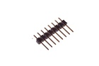
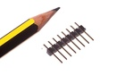

2.54 mm 8 Pin Header - H08
Summary
Name: 2.54 mm 8 Pin Header
ID: HEAD-I01-X-08PI-01
Hex ID: H08
WebPage: https://github.com/oomlout/oomlout-OOMP/wiki/HEAD-I01-X-08PI-01
Short URL: http://oom.lt/H08
Revision History: https://github.com/oomlout/oomlout-OOMP/blob/master/parts/HEAD-I01-X-08PI-01/
| Type |
Size |
Color |
Description |
Index |
HEAD
Header |
I01
2.54 mm |
X
|
08PI
8 Pin |
01
|
Images


About
This part is awaiting a description.
Specifications
| Info |
Value |
| Type |
Header |
| Size |
2.54 mm |
| Description |
8 Pin |
Extra Details
Spotted a mistake, want to add more? Let us know oomp@oomlout.com
All images and resources are licensed [CC BY-SA] unless otherwise stated (ie. the datasheets)